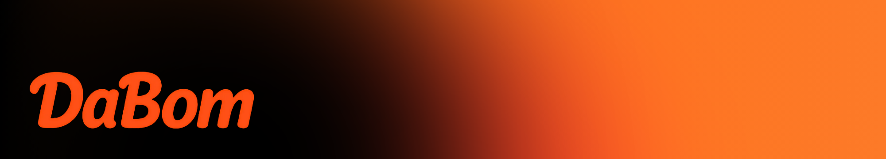

FlowBox Studio
2시간 전
이번 주 업로드 일정 공유
금요일 저녁에 채널 리팩토링 라이브를 진행합니다. 질문은 댓글로 남겨주세요.

@flowbox_studio
2시간 전
금요일 저녁에 채널 리팩토링 라이브를 진행합니다. 질문은 댓글로 남겨주세요.
1일 전
YouTube 스타일 흐름을 참고해 카드 간격, 액션 버튼 위치, 가독성을 개선했습니다.
3일 전
1) 메시지 2) 재생목록 3) 투게더 중 어디를 먼저 리뉴얼하면 좋을지 의견 주세요.